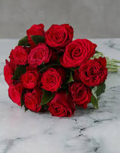

Sunflower
A sunflower is a tall, annual plant known for its large, bright yellow flower heads that follow the sun. It has a rough, hairy stem, broad, toothed leaves, and a prominent central disk of flowers surrounded by yellow ray florets. The flower heads, which are actually inflorescences made of many tiny florets, can be quite large, sometimes reaching 12 inches in diameter. Sunflowers are native to the Americas and are cultivated for their seeds, which are a source of edible oil and food.

Lotus
The lotus is an aquatic plant known for its large, round, flat leaves that float on the water's surface and its showy, fragrant flowers. It's commonly found in shallow, still waters like ponds and lakes, particularly in Asia. The lotus is celebrated for its beauty and symbolic significance in various cultures, especially Hinduism and Buddhism
Rose
A rose is a type of flowering shrub known for its beauty and fragrance. Roses come in various colors, including red, pink, white, and yellow, and are often associated with love and beauty. They are characterized by thorny stems, and their flowers can vary in size and shape. Roses have a long history and are cultivated worldwide, with many uses including decoration, perfumes, and even food